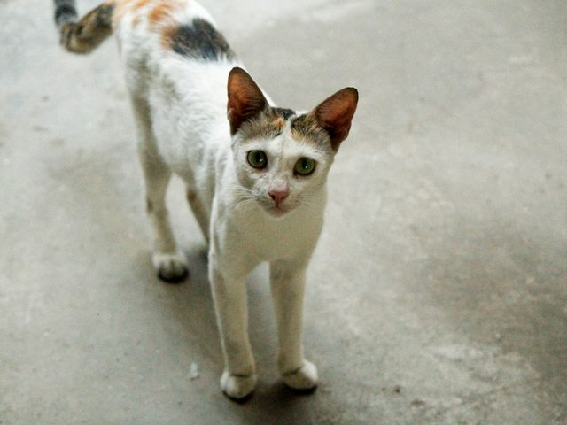
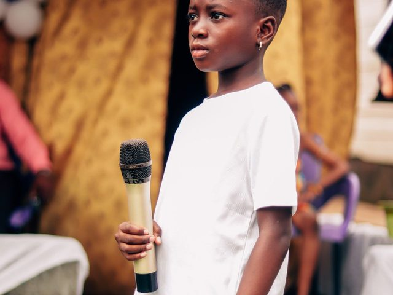
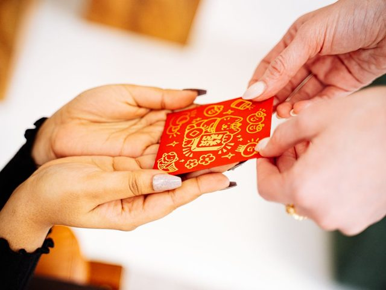
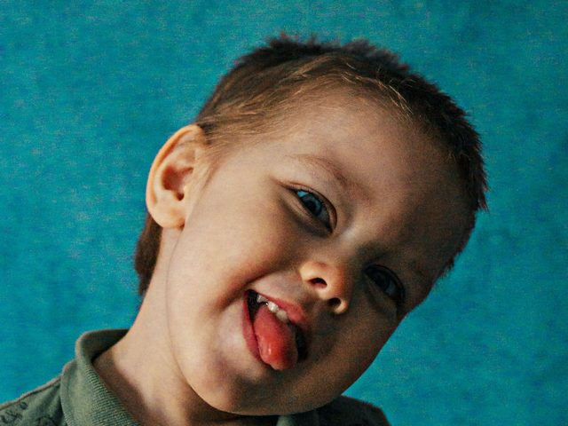
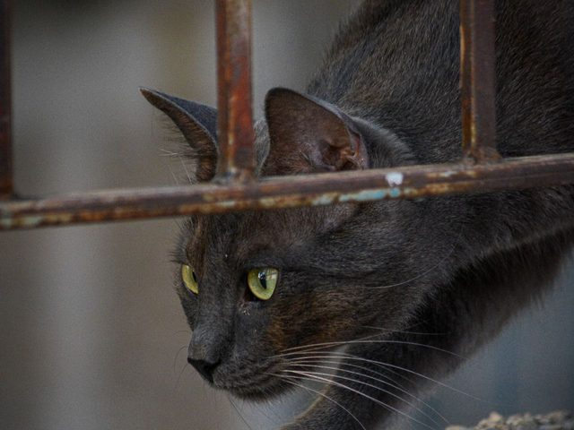

VOCABULARY · 主題 2000 字 PART 2 UNIT 2
Personal characteristics．個人特徵
進階的形容詞，共 41 個：先是外表（胖瘦、聾啞），再來是個性（聰明、慷慨、自私、害羞……）。注意 dis-／im- 開頭的反義字，和 childish／childlike 的差別。
共 41 個單字．點 🔊 聽發音

1chubbyadj.
圓胖的；豐滿的
多形容小孩、臉頰，帶可愛的感覺
The baby has chubby cheeks.那個寶寶的臉頰圓嘟嘟的。
2deafadj.
聾的；耳聾的
the deaf 聾人
My grandpa is a little deaf, so please speak loudly.我爺爺有點重聽，請大聲說話。

3dumbadj.
啞的；不能說話的
口語也指「笨的」，說人不禮貌；現在多說 cannot speak
The boy was born dumb, so he talks in sign language.那個男孩天生不能說話，所以用手語溝通。

4nice-lookingadj.
好看的；漂亮的
= good-looking
Your new bike is really nice-looking.你的新腳踏車真好看。

5overweightadj.
過重的
over 超過 + weight 重量；↔ underweight
The doctor said my uncle was overweight and needed exercise.醫生說我叔叔過重，需要運動。

6skinnyadj.
皮包骨的；極瘦的
比 thin 更瘦
The skinny cat ate all the fish in a minute.那隻很瘦的貓一分鐘就把魚吃光了。

7slenderadj.
苗條的；纖細的
比 skinny 好聽，帶稱讚
The dancer is tall and slender.那位舞者又高又苗條。
8underweightadj.
體重太輕的
under 低於 + weight；↔ overweight
The puppy was underweight, so we gave it more food.那隻小狗太輕了，所以我們多餵牠一些。

9activeadj.
活躍的；活潑的
be active in 積極參與
My brother is active in the school band.我哥哥在學校樂隊很活躍。

10carelessadj.
粗心的；草率的
care + -less；↔ careful
I made a careless mistake on the math test.我數學考試犯了一個粗心的錯。

11childishadj.
幼稚的；孩子氣的
-ish 帶貶意：大人還像小孩
Stop fighting over the toy. Don't be so childish!別再搶玩具了，不要那麼幼稚！

12childlikeadj.
天真的；純真的
-like 帶好意：像小孩一樣單純
The old painter still has a childlike love of colors.那位老畫家仍然像孩子一樣熱愛色彩。

13cleveradj.
聰明的；靈巧的
= smart；cleverer → cleverest
The clever fox found a way to get the grapes.聰明的狐狸想到辦法拿到葡萄。

14confidentadj.
有自信的；確信的
be confident about／of
She practiced a lot, so she felt confident about the speech.她練習了很多次，所以對演講很有信心。
15considerateadj.
體貼的；考慮周到的
consider 考慮 + -ate
It's considerate of you to bring me an umbrella.你帶傘給我，真是體貼。

16crueladj.
殘忍的；殘酷的
be cruel to + 人／動物
It is cruel to keep a big dog in a small cage.把大狗關在小籠子裡很殘忍。

17curiousadj.
好奇的
be curious about 對…好奇
The curious kitten looked into every box.好奇的小貓每個箱子都探頭看。

18diligentadj.
勤勉的；勤奮的
= hard-working；↔ lazy
Amy is diligent. She reviews her notes every night.Amy 很勤奮，每天晚上都複習筆記。
19dishonestadj.
不誠實的
dis- + honest（h 不發音）
The dishonest man lied about the price.那個不誠實的人在價錢上說謊。

20eviladj.
邪惡的；壞的
good and evil 善與惡
In the movie, the evil queen wanted to rule the world.電影裡，邪惡的皇后想統治世界。
21energeticadj.
精力旺盛的；精神飽滿的
energy 精力 → energetic
The energetic kids played soccer all afternoon.那些精力旺盛的孩子踢了一整個下午的足球。
22foolishadj.
愚蠢的；傻的
fool 傻瓜 + -ish
It was foolish of me to leave my bag on the bus.我把包包留在公車上，真是太傻了。

23frankadj.
坦白的；直率的
to be frank 坦白說
To be frank, I don't like this song.坦白說，我不喜歡這首歌。

24gentleadj.
溫和的；溫柔的
副詞 gently
Be gentle with the baby rabbit.對小兔子要溫柔一點。

25generousadj.
慷慨的；大方的
↔ stingy
My generous uncle gave each of us a red envelope.我慷慨的叔叔給我們每人一個紅包。

26greedyadj.
貪心的；貪吃的
greedier → greediest
The greedy boy took all the candy for himself.那個貪心的男孩把糖果全拿走了。
27humbleadj.
謙虛的；簡陋的
↔ proud 驕傲的
The famous singer is still humble and kind.那位有名的歌手仍然謙虛又親切。

28humorousadj.
幽默的；滑稽的
humor 幽默 + -ous
Our humorous teacher makes every class fun.我們幽默的老師讓每堂課都很有趣。
29impoliteadj.
不禮貌的
im- + polite = rude
It's impolite to talk with your mouth full.嘴裡塞滿食物還講話很不禮貌。

30intelligentadj.
聰明的；有才智的
比 smart 正式
Dolphins are very intelligent animals.海豚是非常聰明的動物。
31jealousadj.
嫉妒的
be jealous of + 人
Tom was jealous of his brother's new phone.Tom 嫉妒他哥哥的新手機。

32naughtyadj.
頑皮的；淘氣的
naughtier → naughtiest
The naughty puppy chewed my shoes.那隻頑皮的小狗咬了我的鞋子。

33nervousadj.
緊張的；不安的
be nervous about
I always feel nervous before a test.我考試前總是很緊張。
34patientadj.
有耐心的；（名詞）病人
be patient with + 人；↔ impatient
Please be patient. The bus will come soon.請耐心一點，公車快來了。
35rudeadj.
無禮的；粗魯的
= impolite
It's rude to point at people.用手指著別人很沒禮貌。
36selfishadj.
自私的
self 自己 + -ish
Don't be selfish. Share your snacks with your sister.不要自私，跟妹妹分享零食。

37sillyadj.
愚蠢的；糊塗的
sillier → silliest
I made a silly face, and everyone laughed.我扮了個鬼臉，大家都笑了。
38sincereadj.
真誠的；衷心的
副詞 sincerely（寫信結尾）
Thank you for your sincere help.謝謝你真誠的幫忙。

39sneakyadj.
鬼鬼祟祟的；偷偷摸摸的
sneak 偷偷地走
The sneaky cat took the fish when no one was looking.那隻鬼鬼祟祟的貓趁沒人注意偷走了魚。

40stingyadj.
吝嗇的；小氣的
↔ generous
He is so stingy that he never buys anyone a drink.他小氣到從來不請別人喝飲料。

41talkativeadj.
多話的；愛說話的
talk + -ative
My talkative friend can chat for hours on the phone.我那個愛講話的朋友可以講好幾個小時的電話。
FOCUS
加字首變反義字
| 原本 | 反義 |
|---|---|
| honest 誠實的 | dishonest 不誠實的 |
| polite 有禮貌的 | impolite 不禮貌的 |
| patient 有耐心的 | impatient 沒耐心的 |
| careful 小心的 | careless 粗心的 |
dis-、im-、un- 放在前面表示「不」；-less 放在後面表示「沒有」。
FOCUS
容易混淆的字
| 字 | 意思 |
|---|---|
| childish | 幼稚的（壞的意思） |
| childlike | 天真的（好的意思） |
| skinny | 極瘦的（不好看） |
| slender | 苗條的（稱讚） |
-ish 常帶不好的意思（childish、selfish、foolish）；-like 是「像…一樣」。
FOCUS
意思相反的一對
| 正面 | 反面 |
|---|---|
| generous 慷慨的 | stingy 吝嗇的 |
| overweight 過重的 | underweight 過輕的 |
| humble 謙虛的 | proud 驕傲的 |
| diligent 勤奮的 | lazy 懶惰的 |